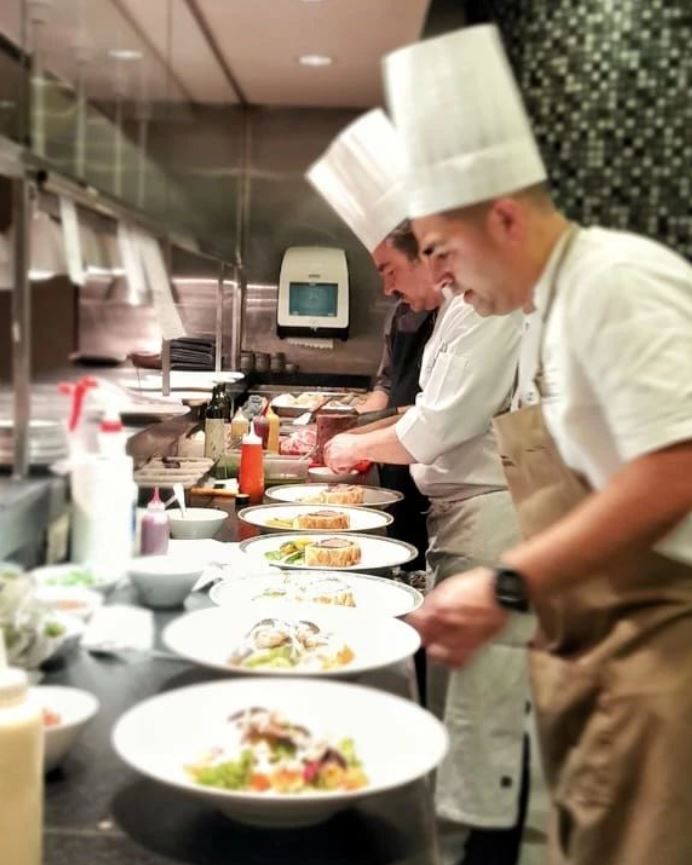

El chef Diego Gera tiene una extensa carrera y su reputación de excelencia lo precede. Formado con los mejores maestros, se capacitó en el país de Argentina y en Europa. Actualmente está a cargo de la cocina del prestigioso Yacht Club Puerto Madero y del Mercado de Carruajes pero ha sido también chef de reconocidos restaurantes a lo largo de los años. Además, es profesor en la Asociación de Hoteles y Restaurantes, Confiterías y Cafés de Buenos Aires. En su tiempo libre le gusta tocar la trompeta y gusta tanto de los autos de colección que hasta tiene uno.
